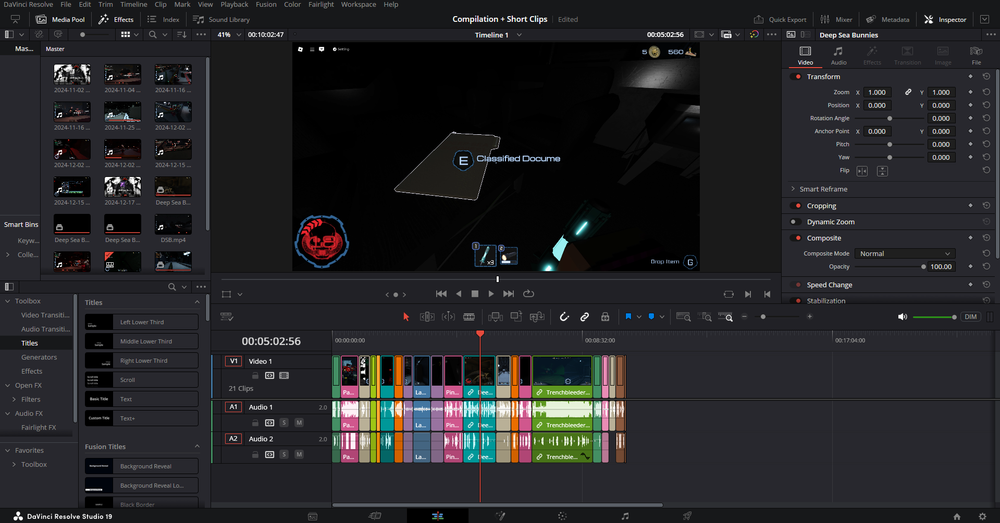
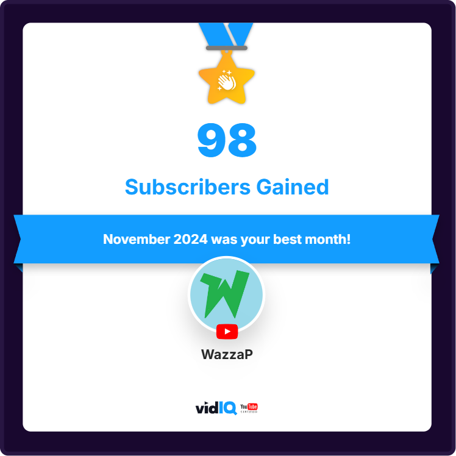
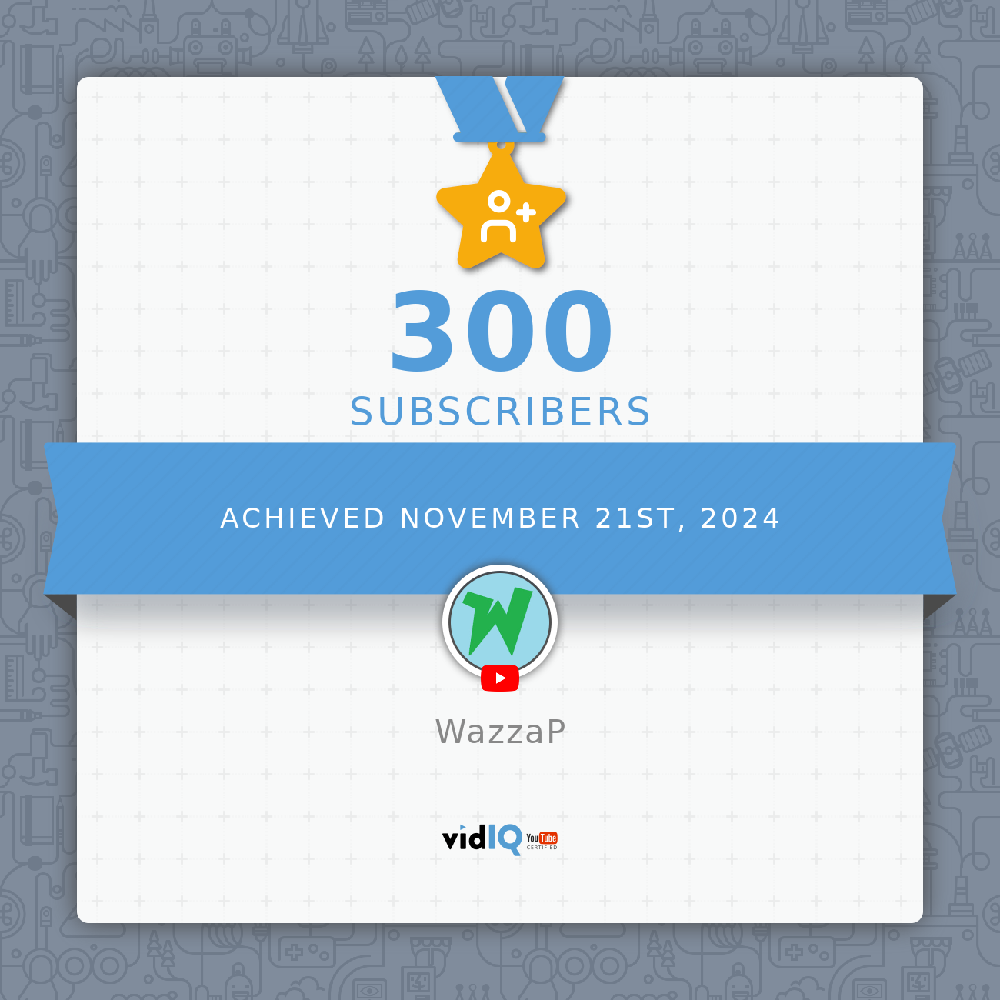
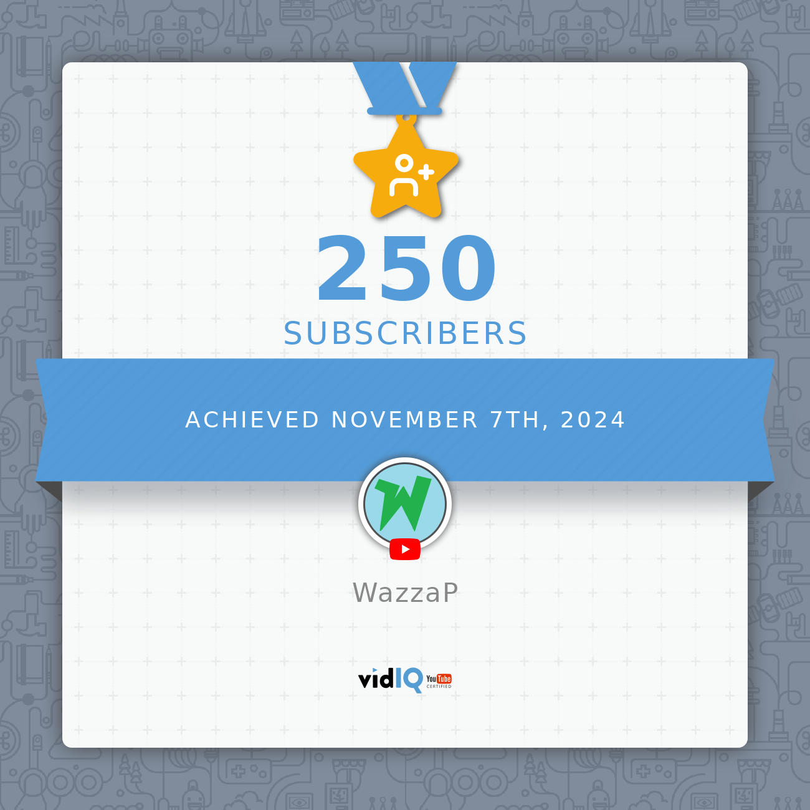
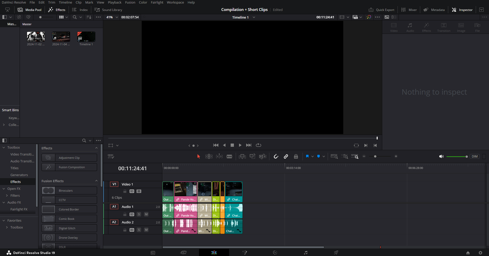
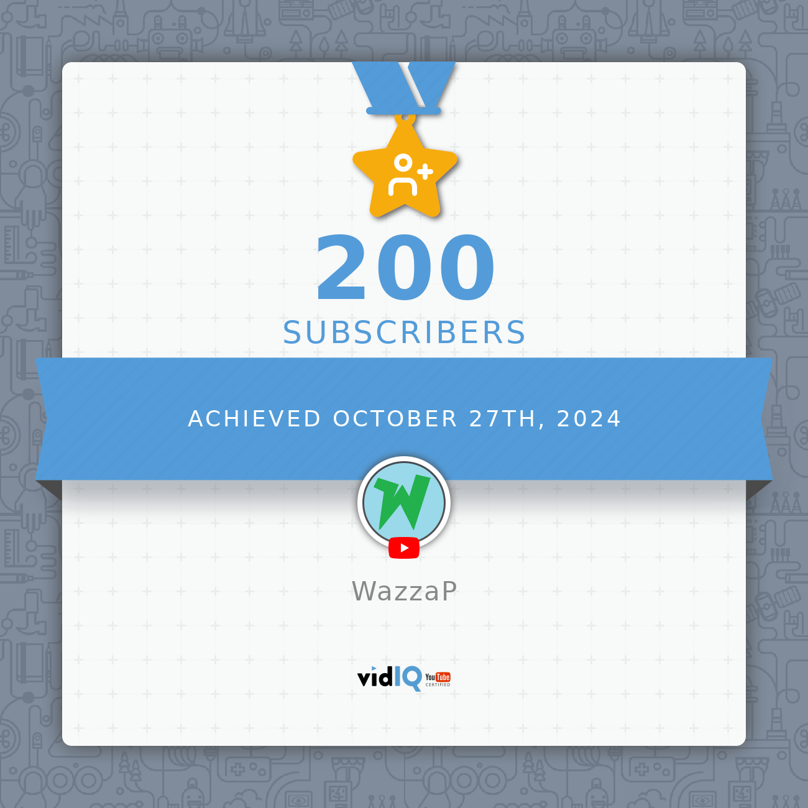
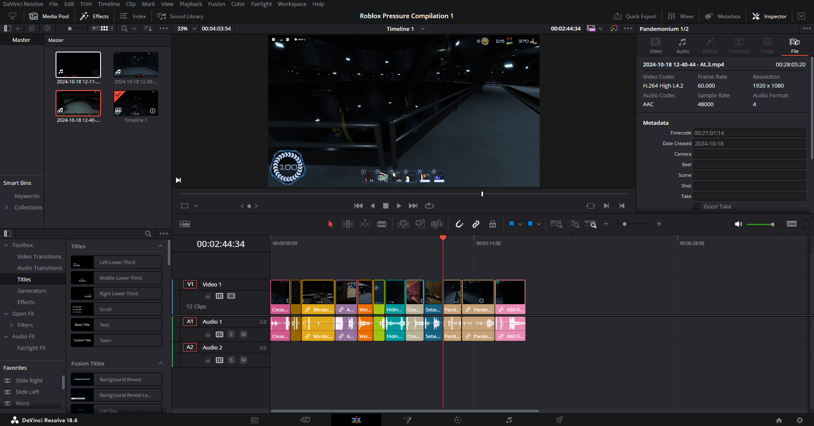
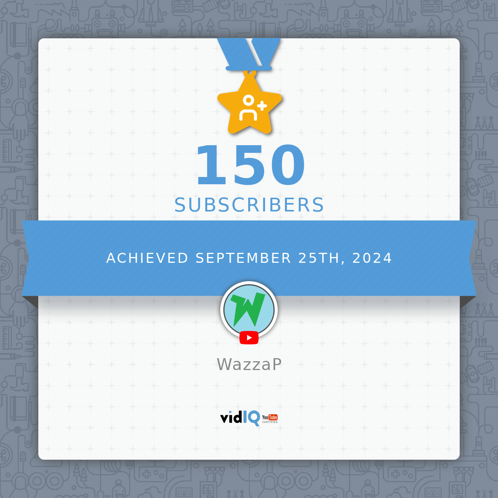

26 January, 2025
Finally did all the cuts from all the footage I got.
The videos are now in production!
14 January, 2025
Hey there, sorry for being away for so long.
There's around 24 HOURS of raw footage I have to edit, and I'm also a part of a "small" little thing that I'm not sure I'm allowed to talk about.
With that being said, I have eliminated around 2/5 of the footage and ended up with ~10 minutes of pure, just cut-up clips. I'll be making 2 big compilations with all the footage I got, with each being 10-15 minutes long. If I somehow have 30 minutes worth of clip footage, I'll make 3 compilations instead. Also, with the "small" little thing, it's taking some time away from me editing the videos, but that's fine since every session is clip-worthy.
That's it from me for now. I'll try to get videos out as soon as possible.
14 December, 2024
Finally got to work on editing videos!
As of now, I've only got a small compilation which has been a WIP for a while now and another Pressure video. I don't have enough time to do a playthrough of Doors, but if I get a chance, I'll record it, edit and post (hopefully before the Pressure videos).
Also, 98 subscribers gained in November alone is absolutely INSANE! I'm so sad I haven't been able to post more, it's really been a while.
21 November, 2024
From 250 to 300 subscribers in around 14 days is absolutely insane!
Now, another small announcement has to be made. I won't be able to record videos for a while due to some personal issues that I wouldn't like to share publicly. BUT, after all that passes, I'll get to making videos immediately. I really wanna work on them but I can't get to do so.
15 November, 2024
Due to personal issues like projects, assignments and other stuff, I wasn't able to record neither Doors nor Pressure videos. I'll try to record during the weekend, but no guarantees there.
My primary focus for videos is first to record Doors, and then finish the second compilation I started working on around 9 days ago.
I've also noticed the crazy amount of support I've been receiving, with the "Staying in the Church" video absolutely blowing up and my sub count pretty much skyrocketing. I'm delighted to see the insane support y'all are giving me, and I'll try my best to keep my videos fast and up to standard.
If there's any suggestions to what I should do next, drop it in the comments of the YouTube post, I'll be looking for 'em.
7 November, 2024
We’ve reached an incredible milestone on YouTube, 250 subscribers! It's been only 12 days, absolutely incredible! Thank you to everyone who’s been part of this journey. Stay tuned for new projects and more content!
6 November, 2024
Currently working on a small video + tryna get TBS on video.
The screenshot I provided is a small peek for the short video I'm working on. It's basically just a compilation of clips from unsuccessful TBS run(s). Will probably be a little while until I fully complete the video, as for now it's a little too short for my liking. As for the successful TBS run video, it'll be as per usual, almost exactly how I did my other Full Walkthrough videos. (just gotta get a successful run on video first :P) If there's anything new I wanna add, or any suggestions y'all have for it, drop it down in the comments of the YouTube post.
I'll also try to record Doors videos as soon as I can, might even be before the 2 pressure vids I just mentioned.
27 October, 2024
I’m absolutely amazed to wake up to 200 subscribers! I'm very glad that more people are enjoying my content. I'll try my best to brainstorm ideas and push the quality up. This is very motivating!
19 October, 2024
Hello dear fans!
I started working on a small filler video for the meanwhile. Due to time restrictions and time differences I can't be certain when I'll be able to do a successful TBS run.
When I have free time (before and/or after TBS), I'll try to get some cool badges and make separate videos on them.
25 September, 2024
I’m thrilled to have came back home to 150 subscribers. Very happy that my videos have been successful, I'll definitely push out more videos as often as I can while maintaining or bettering their quality..
